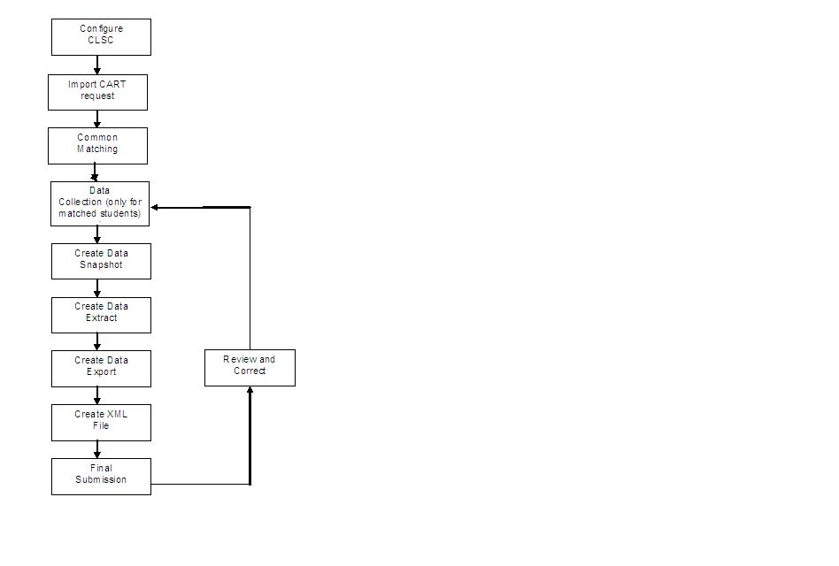

CLSC Overview
Centrelink, the Australian Federal social security agency, provides a number of support options for people undertaking tertiary (Higher Education (HE) and Vocational Education and Training (VET)) studies.
To verify the claims of people receiving this support and track discontinued students, Centrelink requires reports from Australian HE and VET providers setting out the enrolment and load details of students at their institutions. The Banner Centrelink Student Collection (CLSC) Reporting module supports this requirement.
Functions and features
The CLSC module draws information from the Banner CLSC tables and pages, in addition to the tables added specifically for the CLSC functionality.
CLSC is made up of various steps and processes. These are organised as follows.
- Set up the CLSC module: Procedures and forms are used to define elements, values, and processes that are required to produce the CLSC extract.
- Collect and record data: Supplemental procedures and pages are used to enter and review any data required for the reporting compliance that might not have already been entered elsewhere in Banner.
- Create the return: Extract and Report Generation procedures are used to create and view the data snapshot and extract. This step has three stages: snapshot process, extract process, and export process.
- View data: The Process Rules Engine Universal Viewer is used to view the data produced by the snapshot and extract processes.
- Save the final file: The data produced by the processes are saved as the final file.
Although the CLSC reporting software is delivered with defaulted configuration, many of the functions and processes can be tailored to your institution. For example, if the institution records the nominal hours for a TAFE unit as contact hours rather than credit hours, this can be remapped so that the CLSC extract will refer to the SSBSECT_CONTACT_HR process rather than the SSBSECT_CREDIT_HR process.
System parameters
A set of default system parameters is delivered with the CLSC module. These parameters are used to configure the CLSC system.
Use the Report System Parameters (SKARSYS) page to configure this data to the specifics of your implementation. Appropriate permissions are required to modify these forms. Refer to the System Parameters section for details on these parameters.
CLSC data collection
You must process CLSC data collection using the data reporting and extract functionality to meet requirements for CLSC Reporting.
The CLSC module uses rule sets in the Banner Mass Data Update Utility (MDUU) to generate the snapshot, extract, and export files for the return. We have delivered seed data to enable you to begin designing your return process.
To understand how the returns are built, you must understand the process, task, and activity elements of MDUU. Refer to the Banner Mass Data Update Utility Use for a complete explanation of tasks and activities, and how these elements work to support CLSC reporting requirements.
This document uses the following key terms.
- Process: This represents a set of tasks sharing a common business area. The MDUU security allows you to associate users and user classes to a given process. If this functionality is activated, only users assigned to a given process will be able to execute this process.
- Task: This is a set of activities that is carried out as part of a process, such as taking a snapshot of data from the original data sources and gathering them in more synthetic (eventually generated) tables.
- Activity: This is a processing element that is carried out as part of a task, such as a data copy, or a data transformation. An activity updates a single table and can be reused in several tasks.
The typical top-level process flow for CLSC reporting is shown in Figure 1.

Snapshot processing
This process populates snapshot data from baseline tables, but could also be configured to use ASC tables, locally developed tables, and tables from third-party applications.
The process allows selected target tables in the snapshot data structure to be populated. It has the capability to refresh (remove and insert) or update (add new rows and update existing rows) the snapshot.
The structure of the snapshot tables is maintained by the MDUU under a schema called MDUUREP. (Refer to the Banner Mass Data Update Utility Use for more information.)
When running the snapshot, you can select which snapshot tables to populate. You can also purge the selected snapshot tables before re-inserting rows.
- Create snapshot data
- Define the column mappings for the snapshot
- Define the rules to generate the snapshot population
- Initialise the snapshot
- Populate the snapshot
- Increment the snapshot (add or remove records without refreshing the snapshot from scratch).
Extract processing
This process populates the extract based on snapshot data and, where necessary, it transforms the snapshot data into the format needed for the extract.
The process allows selected target tables in the extract data structure to be populated. It has the capability to refresh (remove and insert) or update (add new rows and update existing rows) the extract.
- Create extract data
- Define the column mappings for the extract
- Define the rules to generate the extract population
- Use expressions, functions or both to derive values based on the contents of the snapshot
- Initialise the extract
- Populate the extract
- Increment the extract (add or remove records without refreshing the cohort from scratch).
Export processing
This process populates the export based on extract data. The process allows selected target tables in the export data structure to be populated. It has the capability to refresh (remove and insert) or update (add new rows and update existing rows) the export.
- Create export data
- Define the mappings for the CLOB export column
- Define the rules to generate the export population
- Initialise the export
- Populate the export
- Increment the export (add and remove records without refreshing the cohort from scratch)
- View the export
- Create an XML file from the export data.
Centrelink CART reporting
Centrelink requires education institutions, regardless of whether they are TAFE or Higher Education to supply current enrolment details of particular students upon request. The institution returns information such as the student’s current enrolment load, student’s contact details, and the date the students are expected to complete their course.
Centrelink Academic Reassessment Transformation (CART) operates by means of an incoming request file (which lists students who Centrelink would want to know about) and an outgoing response file (which contains corresponding enrolment details). For reporting purposes, an institution must take the request file, match it to students on their systems, and provide a single XML response file.
Refer to the File Details section for details on these CLSC CART reporting file details.
File details
This section provides information about the following files generated and processed in the CLSC system.
CLSC is designed to process a single incoming request file and produce a single XML file in response. The response file contains all the required information for both TAFE and HE students. The following discussion describes the activities taken to produce the XML response file.
CLSC request file
A CART response file is produced, containing information on each student listed in the request file. The response file indicates whether the students have been matched, whether they are still studying, their enrolment details, optionally, a mobile phone number or e-mail address.
The response file is produced on a per CART user ID basis. Therefore, if an institution has more than one CART user ID (such as if the institution submits TAFE reports separately to HE reports) a response file may be produced for each user ID as required.
Refer to the View CLSC data section for more information on CLSC Request File activities.
The following table describes the XML process for this file.
| Process Type | Process Name | Process Description |
|---|---|---|
| Centre Link (CART) XML Import |
ASC_CENTRELINK_IMPORT
|
This process imports the CART request file details into the Centrelink CART Request Import Table (SKRICAR). |
CLSC response file
You can generate processes for the CLSC Response file.
CLSC common matching
The CLSC Common Matching snapshot activity is included in this release. With this solution, the students listed in the Centrelink Request File are matched (or not) with the students in Banner.
- Common matching rules and source rules which describe the type of matches required are set up in Banner Common Matching (see below for rules)
- A MDUU activity passes data from the import table (the matching data input) to a PL/SQL package (SKKCART)
- The SKKCART package runs the matching process using the input data against the matching rules with pre-defined exit points (see attached algorithm). The common matching source rule codes will be stored on SKBRSYS with an assumed element code of ‘CLSC-MATCH’
- When complete, the SKKCART package updates the import table to indicate that the process has been run and writes match (or non-match) data to the match table.
| Activity Type | Activity Name | Description |
|---|---|---|
| CLSC Common Matching (Snapshot) |
ASC_CLSC_SNA_CMN_MATCH
|
This activity pulls data from the Centrelink CART Request Import (SKRICAR) table to populate the Centrelink CART Request Import (SKRICAR) table. The activity uses RRN as the populate key. |
Build data for CLSC response file
There are activities included to process the CLSC response file.
| Activity Type | Activity Name | Description |
|---|---|---|
| CLSC Match Response (Snapshot) |
ASC_CLSC_SNA_MATCH_RESP
|
This activity uses the Centrelink CART Matching (SKRMCAR) table to populate the Centrelink CART Response Snapshot (SKRSCAR) table. |
| CLSC Ceased Enrolment Check (Snapshot) |
ASC_CLSC_SNA_MATCH_RESP
|
This activity uses the Centrelink CART Matching (SKRMCAR) table, the Student Course Registration Repeating (SFRSTCR) table, the Student General Learner (SGBSTDN) table, and the Centrelink CART Response Snapshot (SKRSCAR) table to populate the Centrelink CART Response Snapshot (SKRSCAR) table. The activity uses RRN and record type as populate keys. |
| Higher Ed Students Enrolment (Snapshot) |
ASC_CLSC_SNA_HE
|
This activity uses the Centrelink CART Response Snapshot (SKRSCAR) table, the Learner Curriculum (SORLCUR) table, the Student Course Registration Repeating (SFRSTCR) table, and the Student General Learner (SGBSTDN) table to populate the Centrelink CART Response Snapshot (SKRSCAR) table. The activity uses RRN, record type, course type, and request type as populate keys. |
| Higher Ed Students Withdrawal (Snapshot) |
ASC_CLSC_SNA_WD
|
This activity uses the Centrelink CART Response Snapshot Table (SKRSCAR), Section General Information Base (SSBSECT) table, Student Course Registration Repeating (SFRSTCR) table, the Learner Curriculum (SORLCUR) table, and the Student General Learner (SGBSTDN) table to populate the Centrelink CART Response Snapshot (SKRSCAR) table. The activity uses the RRN, record type, withdrawn CRN, and course code as populate keys. |
| VET Students Enrolment (Snapshot) |
ASC_CLSC_SNA_VET
|
This activity uses the Centrelink CART Response Snapshot (SKRSCAR) table, Student Course Registration Repeating (SFRSTCR) table, the Learner Curriculum (SORLCUR) table, and the Student General Learner (SGBSTDN) table to populate the Centrelink CART Response Snapshot (SKRSCAR) table. The activity uses RRN, record type, course code, and PIDM as populate keys. |
| CLSC Student Contact (Snapshot) |
ASC_CLSC_SNA_CONTACT
|
This activity uses the Centrelink CART Response Snapshot (SKRSCAR) table, the Telephone (SPRTELE) table, and the Person Email Repeating (GOREMAL) table to populate the Centrelink CART Response Snapshot (SKRSCAR) table. The activity uses RRN, record type, PIDM, and request time as populate keys. |
| Extract |
ASC_CLSC_CART_EXTRACT
|
This activity uses the Centrelink CART Response Snapshot (SKRSCAR)table to populate the Centrelink CART Response Extract (SKRECAR) table. The activity uses RRN and record type as populate keys. |
| Export |
ASC_CLSC_CART_EXPORT
|
This activity uses the skkcart.f_create_response_xml function to generate a correctly formatted response file. The function uses collection code, organisation ID, and request date to generate the response XML and uses organisation ID as populate key. |
Data submission
As the response file is produced as XML, no external validation of the file takes place. The file might be uploaded to the CART Web site using the user ID and password details supplied by Centrelink.
Prerequisites
The minimum required releases for CLSC 8.1 are as follows.
- Banner General 8.3 or later
- Banner CLSC 8.3 or later
- Banner MDUU 8.0 or later
- ASCGEN 8.1.1
- XIGN 8.0Note: The CLSC 8.0 version is not a dependency for CLSC 8.1.
Procedures
You can use few tasks and procedures to work with CLSC reporting.
Define system parameters
There are several reporting elements where the selection of the correct data is dependent on specific Banner codes.
About this task
For example, to report a student’s mobile phone number, you must specify a telephone type code from the Telephone Type Code Validation (STVTELE) page. If you have defined MOBL as the telephone type code to signify ‘mobile phone,’ you would assign MOBL as the value for the MOBILE_PHONE_TYPE system parameter. When this system parameter is used in reporting, it will return data for telephone types of MOBL. If a student does not have a MOBL telephone, then no mobile phone data will be reported for that student in activities using the MOBILE_PHONE_TYPE parameter.
To support inter connectivity between baseline codes and CLSC reporting elements, a predefined set of system parameters is delivered with CLSC Reporting, and you must configure these parameters for use. You can modify the delivered parameters to meet your needs, or you can create new ones. Those that are required by the system are noted as such in the System Parameters section.
Procedure
Import CLSC request file
Use this procedure to import the CLSC request file.
Procedure
Process CLSC returns
Use this procedure to produce the XML response file for Centrelink reporting.
The ASC_CENTRELINK_REPORTING process is used for the CLSC submission. This process contains snapshot, extract, and export activities for CLSC files.
You can control the execution of the process to run specific activities or tasks separately, or to run all tasks and activities together. However, we advise you to run each task separately, evaluating the data each time. This results in better processing times and allows you to do any data cleaning before the final files are ready to be loaded into the CLSC software.
Refer to the Banner Mass Data Update Utility Use for more information about the pages.
ASC_CENTRELINK_REPORTING
You can generate the CLSC report using the process available for CLSC
Procedure
Create XML file returns
The CLSC submission files are XML files and are made up of various parts.
About this task
- Header files: Gives information about the institution
- Main data files: Gives information about student enrolments
- Trailer files: Counts the data records (in a single row) contained in the file
- The header also identifies which institution is being reported and relates to the data being reported. The students contained in the file must belong to the organisation described in the header.
Data for each of these three components is put together to create one single file in the final extract activity.
- Run the common matching activity
- Run the match results snapshot activity
- Run the student enrolment and contact details snapshot activities
- Run the extract activity
- Run the export activity.
The final stage of CLSC reporting is to export the data to an external document. This process allows you to export the extract data to a XML file.
Procedure
- Access the Universal Viewer (GKAPUNV) page.
- Enter the seven-character name of the export table (for example, SKRXCAR) in the Table Name field.
- Use the Filter Column and Filter Value fields to filter the data (for example, you can filter for a particular academic year or term).
- Select Next Block.
- Double-click in any cell of the CLOB column.
- In the Export Data (GKPUNV) page, specify the organisation ID in the Filter field.
- Enter the name of the directory in the Directory Name field to which the file will be exported.
- Enter the name of the exported XML file in the Filename field, ensuring that the file extension is .xml.
- Click Export Column Data.
View CLSC data
You can view the CLSC extract and snapshot data using a SQL tool such as SQL*Plus or a reporting tool like Oracle Discoverer. The MDUU includes a Universal Viewer to allow this data to be viewed and maintained.
System Parameters
This section lists the system parameters delivered for this release.
Report System Parameters (SKARSYS) page
The following table details the system parameters that are available from the SKARSYS page for all CLSC parameters.
| Name | Default Value | Description |
|---|---|---|
TAFE-STUDENT
|
CE,VE | Used by CLSC activities to determine whether a student is a TAFE or HE student. |
STUDENT_EMAIL_TYPE
|
CAMP,HOME | Used to record the e-mail type code used to identify the e-mail address for students. |
CROSS_INST_CODE
|
CROSS-INST | Element code used to identify programs that need to be reported as cross-institutional for CLSC reporting. |
HDEG_STATUS_CLSC
|
AC | Indicates active and valid records on SGRASSI. Used to identify Masters and Ph.D students for CLSC reporting. |
MOBILE_PHONE_TYPE
|
MOB, MOBL | Used to record the telephone type code used to identify the mobile phone number for students. |
CLSC_DATE_FORMAT
|
YYYY-MM-DD | Specifies the format in which dates are reported in Centrelink reporting. |
CLSC-MATCH
|
CL1,CL2 | Lists the common matching match source rule codes. Used to perform request file matching according to CLSC rules. |